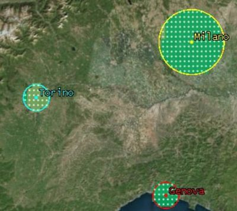
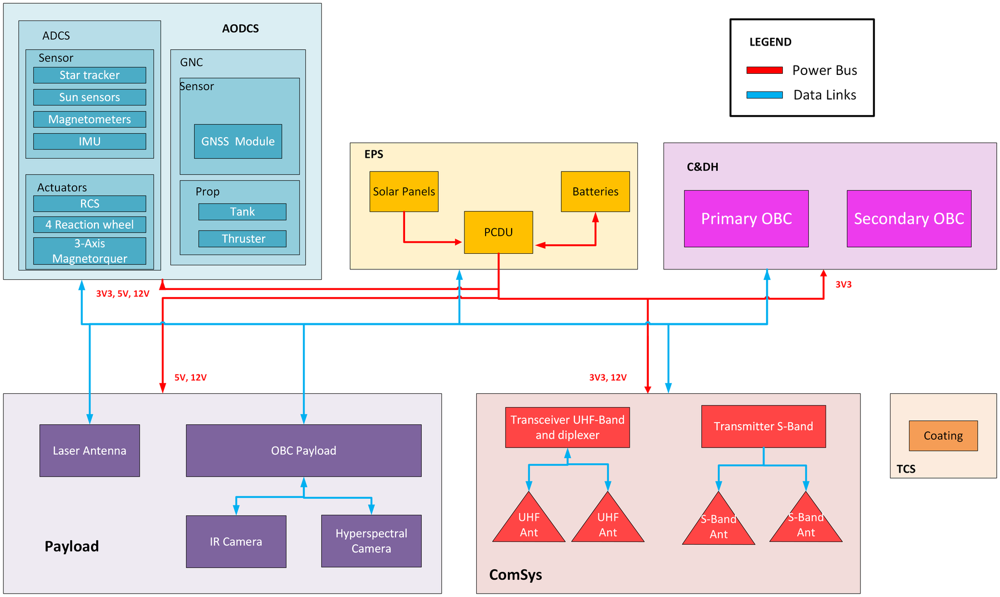
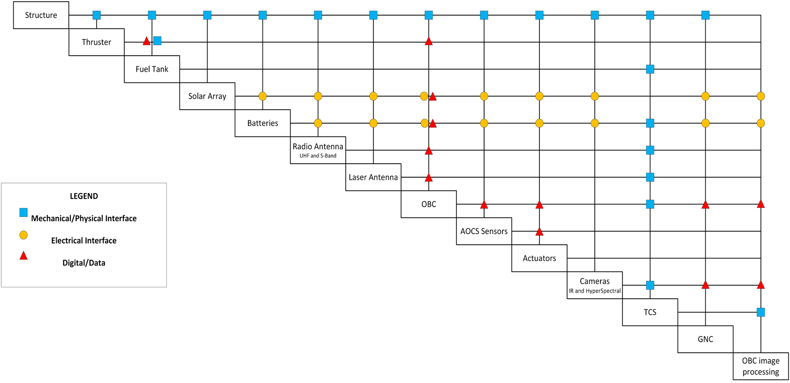
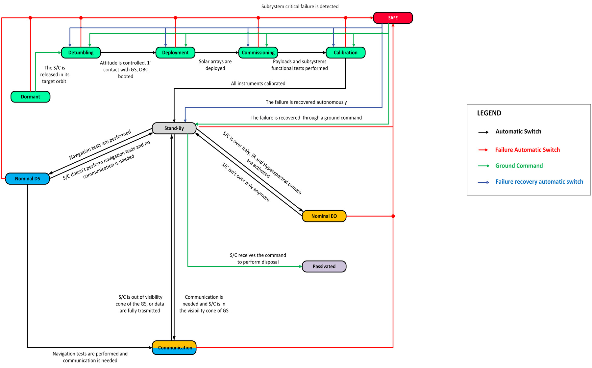
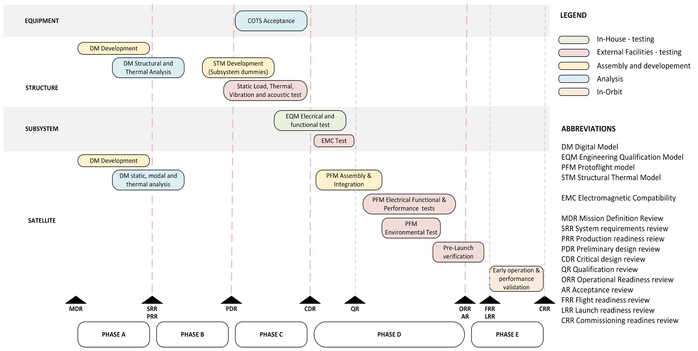

Systems Engineer in a 13-person team
I kept the design consistent across subsystems: architecture, interfaces, requirements and budgets.
While each engineer sized their own subsystem, I coordinated the design of the system as a whole and the integration between them:
- System architecture: defined how payloads and bus subsystems fit together, including the interfaces between them: CAN, RS-422, LVDS, PC/104 and I²C data links, and the 3.3 / 5 / 12 V power buses.
- Requirements: checked that mission and system requirements, managed in Valispace with ECSS classification, were met by the design.
- Budgets: consolidated and checked the mass, volume and power budgets, applying ESA's margin philosophy for assessment studies.
- Integration: acted as the reference point between subsystem engineers, propagating changes and resolving conflicts across iterations.
A deep-space testbed that also does Earth science
H-ADES uses LEO to demonstrate technologies for future deep-space CubeSats while monitoring urban heat islands over Italy.
Objectives
The name stands for Hybrid – Advanced Dual mission for Earth and Space. Its four objectives:
- Landmark navigation: map the Earth, build a landmark database on board and use it to estimate the spacecraft's position, checked against GNSS.
- Optical communication: send the same science data through a laser terminal and an S-band link, then compare what arrives on the ground.
- Autonomous operations: test a machine-learning power-management algorithm against a deterministic one.
- Urban heat islands: night-time land-surface temperature and vegetation index over the 12 Italian cities most affected.

Architecture
- Spacecraft: custom 12U XL CubeSat, launched on Falcon 9 from an ExoPod Nova dispenser.
- Orbit: circular sun-synchronous orbit at 550 km (LTAN 4 am), giving access to both ground stations and night-time city passes.
- Payloads: HyperScout-S hyperspectral camera (vegetation index and daylight navigation), T-Scout thermal-infrared camera (land temperature and eclipse navigation), and the TESAT CubeLCT laser terminal.
- Ground segment: optical ground stations at DLR Oberpfaffenhofen and ESA Teide; radio ground stations at Weilheim and Fucino.
- Communications: laser and S-band for science data, UHF for TT&C, with no deployable antennas.
Payload and bus, kept independent
A dedicated payload computer and cold redundancy on critical units keep a payload fault from taking down the spacecraft.
The flight segment is split into payload and bus. A dedicated payload computer, separate from the platform computer, handles image processing, Earth-map generation and landmark detection, so payload faults can't take down the bus. Critical units use cold redundancy, which adds reliability without loading the power system.



Budgets with ESA margins
20.3 kg against a 50 kg limit, fitted into 10.5 of the 12U available.
Margins follow ESA's philosophy for assessment studies: 5% on off-the-shelf parts, 20% on custom structures, and 25% at system level on power. The disposal manoeuvre, analysed with DRAMA, brings the spacecraft down within about four years, which complies with ESA's space-debris mitigation policy.

From digital model to protoflight
The AIV plan follows ECSS standards, and FEM analysis puts the first natural frequency far above Falcon 9's minimum.
The assembly, integration and verification plan follows ECSS verification and testing standards. It moves from a digital model through structural-thermal and engineering-qualification models to a protoflight model. Static thermal (hot and cold case) and FEM modal analyses checked the design against the launcher's requirements: the first natural frequency is 258 Hz, well above Falcon 9's minimum.
